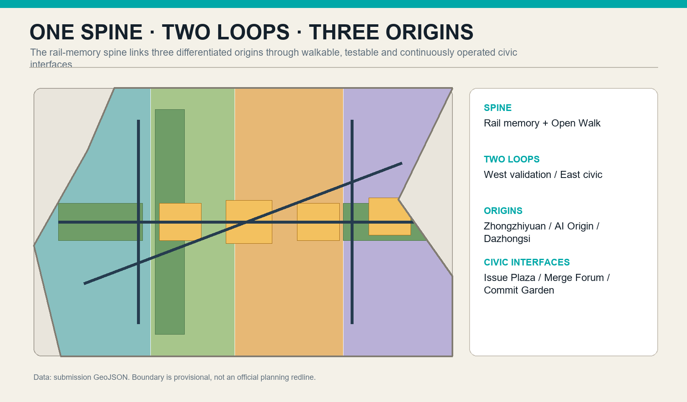
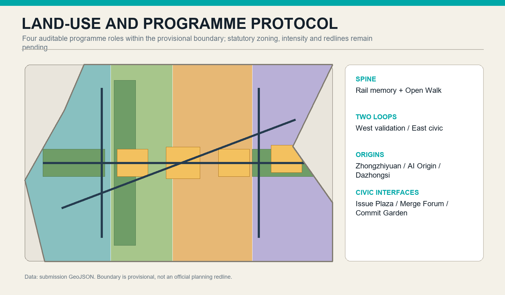
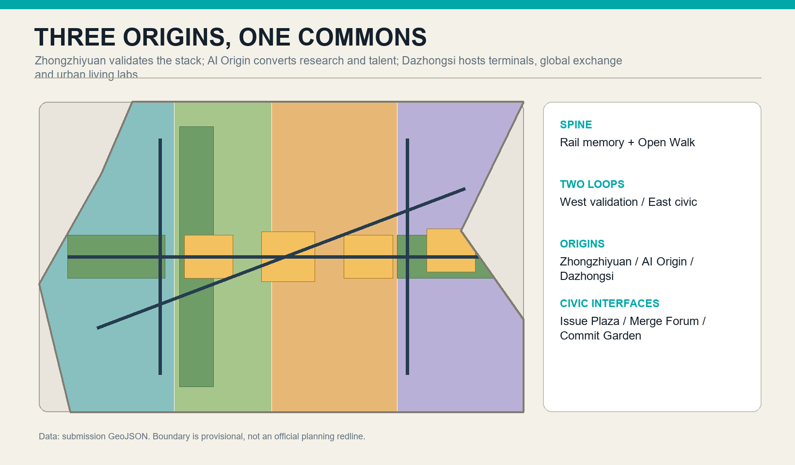
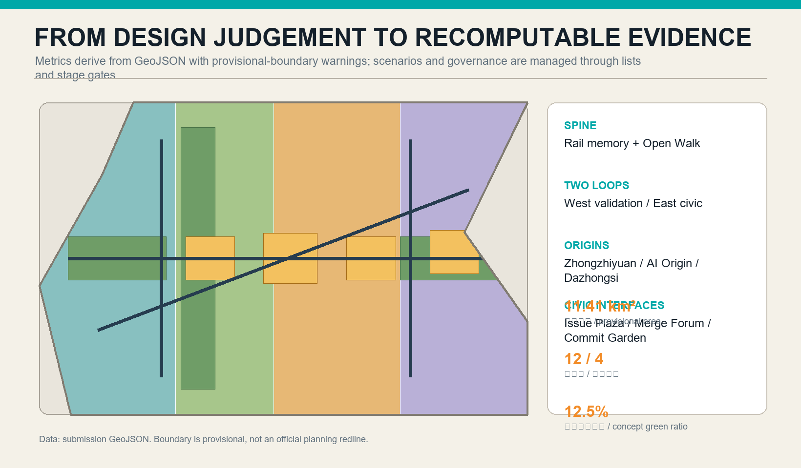

Jing-Zhang Open Intelligence Commons
A rail-memory spine, two loops and three origins turn AI innovation into civic infrastructure.
Jing-Zhang Open Intelligence Commons
Design Basis and Source List
The proposal treats the Centennial Jing-Zhang AI Innovation Belt as civic infrastructure for open intelligence: code, models, data, scenarios and public questions are framed, tested, reviewed and operated here. Its basis is the official announcement, the Agent taskbook, the public source registry and local professional-standard excerpts 来源 来源 标准. The submitted boundary and three key areas are repository-supplied provisional rough geometry for concept generation, display and intake checks only; they are not official redlines, statutory controls or precise-area evidence 空间数据 空间数据.

Three-Level Scope Framework
The three levels form one decision chain. Regional mechanisms become corridors and civic interfaces, then reversible key-area prototypes. Every prototype must return measurable lessons to the belt. Official boundaries, road redlines and a full survey are absent, so areas support comparison and tool validation only. Official geometry must trigger recalculation of all derived layers, metrics, figures, HTML and PDFs 空间数据.
The three levels are one decision chain rather than separate drawings. Regional mechanisms become corridors and civic interfaces at overall-design scale, then reversible prototypes in the key areas. Every prototype must feed measurable lessons back to the belt. Because official boundaries, road redlines and a full existing-condition survey are absent, areas support comparison and tool validation only. Once official geometry arrives, the base polygons, all derivative layers, metrics, figures, HTML and PDFs must be recalculated together 空间数据.
The coordinated research area addresses regional collaboration and future-city questions; the overall design area sets renewal, public-space, mobility and blue-green structure; the three key areas become prototypes for professional deepening. All three levels share one evidence chain and explicit boundary caveat 深度 深度.
Coordinated Research Area: Industry and Future City Research
Case transfer follows capability, interface, space and governance. It extracts auditable mechanisms, specifies data and responsibility interfaces, assigns suitable labs or civic rooms, and adds privacy, accessibility, incident and exit rules. Regional links are proposed benchmarks and portable protocols, not administrative commitments. Local capacity and demand still require public intake and professional research 来源.
Case transfer follows four steps: capability, interface, space and governance. The proposal extracts verifiable collaboration mechanisms rather than copying iconic forms; specifies data, equipment and responsibility interfaces; assigns suitable labs, forums, street tests or civic rooms; and adds privacy, accessibility, incident and exit rules. Regional collaboration is a proposed common benchmark and portable protocol, not an administrative commitment. Local capacity and stakeholder needs still require public issue intake and professional research 来源.
An “open models—open scenarios—open governance” interface can connect northern science districts, Future Science City, Huairou Science City, the Economic-Technological Development Area and wider Jing-Jin-Ji nodes. Transfer mechanisms include open benchmarks, trusted data spaces, scenario challenge lists, global open-source residencies, low-carbon compute accounting and ethics review 来源 深度.
Overall Design Area: Urban Renewal and Regulatory-Plan-Level Urban Design
The spine makes rail memory, civic questions and innovation legible; different access levels keep validation activity from disrupting daily life. Four conceptual bands cover the submitted geometry for topology checks but do not claim real parcels. Design layers are clipped to the provisional extent, while road lines express connectivity only. Intensity, heights and renewal actions await official controls and surveys 指标.
The spatial rule is visible along the spine, reachable across streets and able to shift between indoor and outdoor settings. The spine makes rail memory, civic questions and innovation processes legible; different access levels keep validation activity from disrupting daily life. Four conceptual bands cover the submitted geometry for auditable topology but do not claim real parcels or ownership. All design layers are clipped to the provisional extent, while road lines express connectivity only 指标.
The structure is one spine, two loops and three origins. The rail-memory Open Walk is the spine; a western loop serves R&D and validation, while an eastern loop serves community life and civic services. The four land-use bands are programme protocols, not new statutory zoning; intensity, heights, demolition and utility alignments remain pending 空间数据 深度.

Detailed Design of Key Areas
Zhongzhiyuan is the trusted full-stack validation origin; AI Origin Community is the talent and open-source transfer origin; Dazhongsi is the intelligent-terminal and urban-life origin. They share a contribution protocol while retaining distinct industry roles 空间数据 深度.

AI Innovation Ecosystem, Personas, and AI+ Scenarios
Five core personas are open-source developers, start-ups, researchers, surrounding residents and international visitors. Older adults, children, people with low vision and people with limited mobility act as inclusion reviewers across the process 来源 深度.
Twelve scenario cards cover accessible multimodal wayfinding; human-reviewed rail crowd prompts; campus-industry transfer matching; enterprise-service copilots; senior-service referrals; rain-garden microclimate feedback; civic co-design boards; rail-heritage interpretation; multilingual public services; bounded last-metre delivery; a trusted-agent interoperability sandbox; and low-carbon compute accounting. Delivery, interoperability, model-safety evaluation and compute accounting are testing-and-validation scenarios with bounded zones, authorised data, human takeover, event logs and exit rules 指标 指标.
Land Use, Building Scale, and Retain-Renovate-Demolish Strategy
Seven nodes support incubation, validation, culture, exchange, global collaboration, talent living and civic services. Demolition requires structural and fire review, heritage assessment, life-cycle carbon evidence and public-connectivity benefit. The building layer is not a survey. Professional teams must map nodes to reusable stock and then test height, spacing, daylight, fire and utility capacity 深度.
Seven nodes support incubation, validation, culture, exchange, global collaboration, talent living and community services. Demolition requires structural/fire review, heritage assessment, life-cycle carbon evidence and a clear public-connectivity benefit. Since existing-building floor area and condition are unavailable, the building layer is a spatial index, not a survey. Professional teams must map the nodes to reusable stock and then test height, spacing, daylight, fire and utility capacity 深度.
The sequence is retain first, retrofit second, demolish cautiously and add reversible elements. The seven footprints are conceptual nodes, not a surveyed inventory, ownership judgement or permit. Total floor area, density and FAR remain unknown 空间数据 指标 深度.
Transport, Rail, Municipal Infrastructure, and Public Services
Continuity is audited from station to crossing, park and entrance, checking gradients, tactile paving, lighting, shade, waiting and information. Devices operate only in marked low-speed zones with human takeover. No capacity, parking or new-access claim is made because stops, sections, demand and utilities are missing. Engineering must replace centre lines with official redlines before checking emergency and service conflicts 指标.
Continuity is audited from station to crossing, park and building entrance, checking gradients, tactile paving, lighting, shade, waiting and information. Delivery devices operate only in marked low-speed zones with human takeover. No capacity, parking or new-access claim is made because stops, sections, demand and utilities are missing. Later engineering must replace centre lines with official redlines and sections before checking detours, emergency access and service conflicts 指标.
The Open Walk links the three origins; two slow-mobility loops serve validation and civic life. Early work should audit breaks, universal accessibility and night safety. Parking, utility lines, road redlines and station engineering require official data. AI wayfinding offers advice only 空间数据 深度.

Blue-Green Network, Public Space, and Urban Character
Green continuity supports shade, retention and thermal comfort; civic interfaces make technical work understandable outside closed campuses. Every node needs free seating, water and toilet directions, wheelchair turning and a non-digital alternative. Concept ratios derive from polygons but ignore surveyed trees, hydrology, basements and ownership, so they are not statutory metrics. Rail and industrial scale should remain legible 指标.
The network carries ecological and social functions. Green continuity supports shade, retention and thermal comfort; civic interfaces make technical work understandable outside closed campuses. Every node should provide free seating, water and toilet directions, wheelchair turning and a non-digital alternative. Concept ratios derive from unioned polygons but ignore surveyed trees, hydrology, basements and ownership, so they are not statutory green-space metrics. Rail and industrial scale should remain legible 指标.
The memory green spine connects Issue Plaza, Merge Forum, Commit Garden and Public Experience Station. A scalable identity combines rail-sleeper brackets with three open-source nodes, using deep rail blue, teal and warm orange 空间数据 深度.
Renewal Projects, Implementation Policy, and Phasing
Near-term reversible signage, walkability repairs, civic interfaces and low-risk digital pilots lead to medium-term links among validation, talent services and rail access, then a belt-wide operating network. Five gates—problem intake, ethics/data review, bounded test, public evaluation, and scale-or-exit—preserve human decision authority. Phasing is conceptual, not a funding or government commitment 空间数据 深度.
Annual operations combine Open Model Week, Urban Agent Challenge, Jing-Zhang Commons Forum and a winter trustworthy-AI retrospective. Three pilgrimage nodes—Origin Stage, Merge Forum and Commit Garden—remain subject to professional siting and design 来源 深度.
Metrics, Area Recalculation, and Compliance Matrix
Only values directly recomputable from geometry or explicit lists are known; missing controls remain unknown. The three matrices map tasks, standards, depth and evidence. Every geometry change must refresh metrics, figures, HTML, PDFs and hashes, followed by human checks of units, formulas, CRS and bilingual numeric equivalence. Provisional data gaps do not block content review but every precision claim remains qualified 标准.
Metrics distinguish spatial outcomes, operating processes and governance safeguards. Only values directly recomputable from geometry or explicit lists are known; missing controls remain unknown rather than being imputed. The compliance, standard and depth matrices map tasks and evidence without crowding the narrative. Every geometry change must refresh metrics, figures, HTML, PDFs and hashes, followed by a human sample check of units, formulas, CRS and bilingual numeric equivalence 标准.
The provisional submitted extent recalculates to about 11.41 km². Concept green/public-space ratios derive from GeoJSON; there are twelve scenario cards and four validation scenarios. FAR, floor area, road area and building density remain unknown because official controls and surveys are absent 指标 指标 深度.

Risk, Copyright, and Compliance
Text, geometry and graphics are agent-generated from registered sources and embed no commercial basemap, remote font or third-party image. Sensitive scenarios cannot collect real personal data at concept stage. Every pilot needs an accountable operator, user notice, takeover, log limits, appeal and stop conditions. Provisional boundaries, heritage, utilities, ownership and engineering remain priority gaps; the concept cannot support tender, construction or approval 来源.
Text, geometry and graphics are agent-generated from registered sources and embed no commercial basemap, remote font or third-party image. Health, safety, child, movement-trace or enterprise-sensitive scenarios cannot collect real personal data at concept stage. Each pilot needs an accountable operator, user notice, takeover, log-retention limit, appeal and stop condition. Provisional boundaries, heritage, utilities, ownership and engineering conditions remain priority gaps; the concept must not be used for tender, construction or approval 来源.
Risks include provisional-boundary misreading, excessive data capture, bias, automation overreach, operating cost and obsolescence. Responses are prominent caveats, data minimisation, subgroup fairness tests, human review, reversible pilots and annual exit reviews. Every spatial move is a conceptual recommendation for professional deepening; no official endorsement, selection, approval or implementation is claimed 来源 深度.
References
Core sources are the official planning announcement, Agent taskbook, source registry, provisional geometry and local standard excerpts. Announcements define scope; provisional geometry supports concept location and tool recalculation only; standards support methods only when their local snapshot permits. Any future external source must record publisher, dates, rights, scope and limits in sources.json before formal use 来源 来源 标准.
Core sources are the official planning announcement, the Agent taskbook, source registry, provisional geometry and local standard excerpts. Announcements define task scope; provisional geometry supports concept location and tool recalculation only; standards support methods only when their local snapshot status permits. Any future external source must record publisher, date, access date, rights, scope and limitations in sources.json before entering the formal argument 来源 来源 标准.
See sources.json for complete provenance, rights and use limits; standard_matrix.json for standards; compliance_matrix.json for tasks; and design_depth_matrix.json for depth coverage.